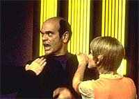
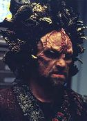
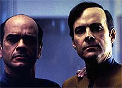
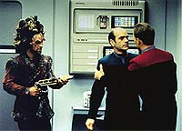
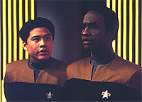

|
MANCHETE
DO EPISDIO
Doutor alucina e questiona existncia
enquanto organismo vivo e
consciente
Episdio
anterior | Prximo
episdio
Sinopse:
Data Estelar: 48892.1.
O mdico hologrfico automaticamente ativado devido a uma condio
de alerta vermelho. Segundo o computador, a tripulao teria
evacuado a Voyager aps um ataque Kazon.
 Pouco
depois, o Doutor descobre que a informao falsa quando Torres
o procura para atender a capit Janeway, que estava ferida na
ponte. Uma tecnologia do sistema hologrfico permite que o Doutor
acesse outras partes da nave, como a ponte, o Mess Hall etc.
Algum tempo depois, o mdico no acredita que o que v real,
pois ele se machuca e sangra e seu tricorder diz que ele a nica
forma de vida na Voyager.
Um holograma da engenharia chamado Reginald Barclay aparece e diz
que o Doutor na verdade o dr. Louis Zimmerman, um programador de
hologramas, que ficou preso num holodeck no quadrante Alfa.
 Ele
diz que uma inundao de radiao no holodeck ir mat-lo, e
que no h meio de sair dali, a no ser destruindo a Voyager para
terminar a simulao. O Doutor passa a ficar cada vez mais
perturbado pela dvida de sua real identidade, quando Chakotay
aparece dizendo que ele de fato o mdico da Voyager e Barclay
estaria mentindo
Ao final, descobre-se que tudo no
passou de um mau funcionamento do programa do holograma mdico de
emergncia, que passou por algum tipo de alucinao. Tudo volta
ao normal, exceto pelo Doutor, que passa a questionar ainda mais sua
natureza e sua condio enquanto ser vivo.
Comentrios:
"Projections"
um episdio intrigante, beirando o non sense, que se revela como
nada mais que mera iluso, aps 45 minutos de crescente tenso.
No centro desse turbilho, o Doutor hologrfico.
 Embora
no fim das contas descubramos que tudo no passou de um mau
funcionamento alucingeno do holograma (por mais que uma alucinao
seja pouco convincente para um ser hologrfico controlado por
computador), o episdio desenvolve bastante a personalidade do mdico
--enfatizando o maior dilema de seu personagem: ele de fato um
ser vivo?
A sugesto feita pelo episdio a de que o Doutor to humano
quanto os verdadeiros humanos, com personalidade e conscincia prprias,
embora no passe de uma poro de algoritmos e padres de luz.
Tudo bem que o objetivo dos produtores ir aos poucos
transformando o holograma em um ser reconhecidamente vivo, mas a
abordagem aqui ligeiramente equivocada --para incluir seres
estranhos na classificao de vida, o ideal no limitar os
padres desses seres, mas sim estender o conceito do que um ser
vivo.
Em outras palavras, o Doutor no precisa sonhar e alucinar como um
humano para ser considerado vivo. Pelo contrrio, o conceito de
vida que tem que se alargar para poder abra-lo. Esse efeito foi
obtido com perfeio quando se tratava de Data --que sempre foi
reconhecido por possuir algumas deficincias, como a de no ter
emoes (controversamente removida no filme "Generations"),
mas mesmo assim passou a ser reconhecido como uma forma de vida.
O episdio que tratou disso, "The Measure of a Man"
(segunda temporada da Nova Gerao), conseguiu capturar
muito bem esse esprito, quando Data considerado vivo pela
incapacidade de determinar se ele de fato est vivo ou no.
 Infeliz,
portanto, a estratgia de aplicar demasiada humanidade no Doutor.
Tendo isso dito, vamos ver o que h de bom, pois, se suspendermos
esse vis crtico da questo, descobriremos que "Projections"
uma histria divertida e intrigante, em que a imaginao do
Doutor reflete suas maiores preocupaes.
O episdio um verdadeiro "tour
de force" para o ator Robert Picardo --que no decepciona,
realizando uma de suas melhores atuaes at este momento na srie.
A histria tambm vai ao mago de seu personagem, refletindo as
angstias de ser uma forma de vida artificial, no limiar entre a
programao e o livre arbtrio.
Como segundo fator de reflexo, percebemos uma atrao sexual
latente do Doutor por Kes, refletida na alucinao que faz da
Ocampa sua esposa. Essa situao seria prontamente transferida,
com ainda maior intensidade, para a personagem Seven of Nine, quando
ela se tornar uma das regulares da srie, a partir do quarto ano.
De qualquer modo, a cena que fecha o episdio, entre o Doutor e a
Kes, , no mnimo, interessante. Um ponto para essa personagem que
costuma ser to mal utilizada na srie.
 As
sbitas mudanas de direo do episdio (ora ele Louis
Zimmerman, ora no ) so surpreendentes e interessantes, assim
como o a premissa que envolve a apario de um velho conhecido
dos fs: o tenente Reginald Barclay. Pena que a concluso do episdio
mostre que tudo no passou de mera "projeo", fazendo
com que o telespectador se sinta um pouco enganado, por passar uma
hora refletindo sobre uma histria que sequer aconteceu.
A ttulo de observao, vale lembrar que o episdio sofreu a
chamada "sndrome de fim da temporada" (como o dcimo stimo
episdio produzido, ainda no primeiro ano, embora tenha sido
exibido apenas durante a segunda temporada). O resultado um
segmento com poucos atores convidados e um episdio totalmente
ambientado na nave.
No fim das contas, o episdio existe por uma causa nobre
--desenvolver o personagem do Doutor--, mas acaba sendo superado por
outros, que nem esse intuito tiveram. "Projections"
foi bom. Mas poderia ter sido muito melhor.
Citaes:
Neelix - "No one gets the
best of me in my kitchen!"
("Ningum leva a melhor sobre mim na minha cozinha!")
Doutor - "He looks a lot like me. In fact, he looks exactly
like me. Computer, is this me?"
("Ele parece muito comigo. De fato, ele exatamente igual a
mim. Computador, esse sou eu?")
Doutor - "Computer, delete Paris."
("Computador, deletar Paris.")
Trivia:
 "Projections" foi
dirigido por Jonathan Frakes (Will Riker), e foi concebido para ser
o antepenltimo episdio do primeiro ano de Voyager, mas
posteriormente, junto com mais trs episdios, foi jogado para o
incio da segunda temporada.
"Projections" foi
dirigido por Jonathan Frakes (Will Riker), e foi concebido para ser
o antepenltimo episdio do primeiro ano de Voyager, mas
posteriormente, junto com mais trs episdios, foi jogado para o
incio da segunda temporada.
Saiba tudo sobre Reginald Barclay, o
segundo personagem de outra srie de Jornada a aparecer em Voyager
(o primeiro foi Quark, no piloto "Caretaker"):
Interpretado por Dwight Schultz (o "Louco" Murdock, da srie
"Esquadro Classe A") o tenente Reginald Barclay,
engenheiro especialista em diagnsticos de sistemas, tranferiu-se
da USS Zhukov para a USS Enteprise-D em 2366. Barclay, embora seja
um engenheiro muito talentoso, tem srios problemas para conviver
com outras pessoas por causa de sua timidez, tornando-se uma pessoa
extremamente anti-social. Com tendncia a recluso, Barclay
extravasava seus sentimentos a bordo da Enterprise-D no holodeck,
onde vivia uma vida cheia de fantasias. Em uma destas fantasias,
Barclay recriou imagens de seus colegas de tripulao,
colocando-os em bizarras situaes na qual ele detinha todo o
controle ("Hollow Pursuits", Nova Gerao).
Em 2367, Barclay foi exposto uma emisso de uma sonda Cytheriana,
o que causou um enorme aumento da atividade neural no seu crebro,
elevando o QI para 1200. Aps causar uma srie de transtornos a
bordo da Enterprise, Barclay acabou por voltar a normalidade ("The
Nth Degree", Nova Gerao).
Reg Barclay tem uma forte fobia de teletransportes, e para piorar
seu trauma, em "Realm of Fear" (sexto ano da Nova
Gerao), Barclay foi atacado por micrbios quasienergticos
que viviam no feixe de teletransporte, durante a misso de resgate
da USS Yosemite.
Barclay ainda apareceu nos episdios da Nova Gerao "A
Fistful of Datas", "Ship in a Bottle" e "Genesis".
Neste ltimo, toda a tripulao involuiu, e Barclay foi
transformado em uma "aranha-homem" graas a uma sndrome
posteriormente conhecida como "Sndrome Protomrfica Barclay".
Aps a destruio da Enterprise-D no filme de cinema "Jornada
nas Estrelas - Generations", Barclay transferiu-se para a
Central de Holoprogramao da Federao na Estao Jpiter.
Porm em "Jornada nas Estrelas - Primeiro Contato",
Reg Barclay visto junto tripulao da Enterprise-E.
Reg ainda ser visto em Voyager nos episdios "Pathfinder"
e "Life Line", da sexta temporada, e "Inside
Man", do stimo e ltimo ano da srie. Nestes trs episdios
ele ter a companhia da conselheira Deanna Troi.
Ficha
tcnica:
Escrito por Brannon Braga
Dirigido por Jonathan Frakes
Exibido em 11/09/1995
Produo: 017
Elenco:
Kate Mulgrew como
Kathryn Janeway
Robert Beltran como Chakotay
Roxann Biggs-Dawson como B'Elanna Torres
Robert Duncan McNeill como Tom Paris
Jennifer Lien como Kes
Ethan Phillips como Neelix
Robert Picardo como Doutor
Tim Russ como Tuvok
Garrett Wang como Harry Kim
Elenco convidado:
Dwight Schultz como tenente Reginald Barclay
Episdio
anterior | Prximo
episdio
|